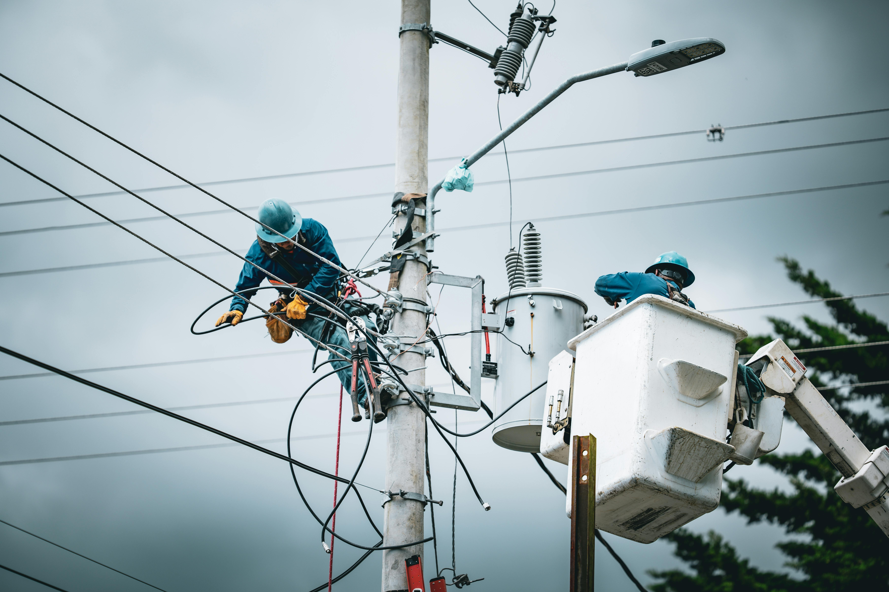
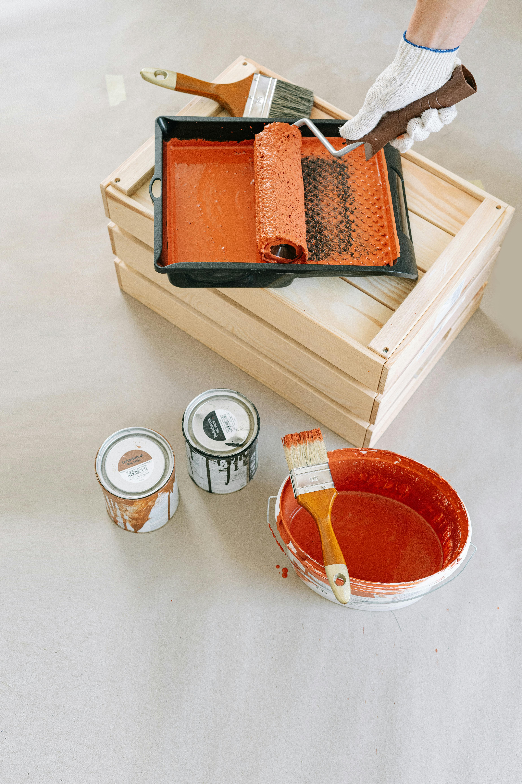
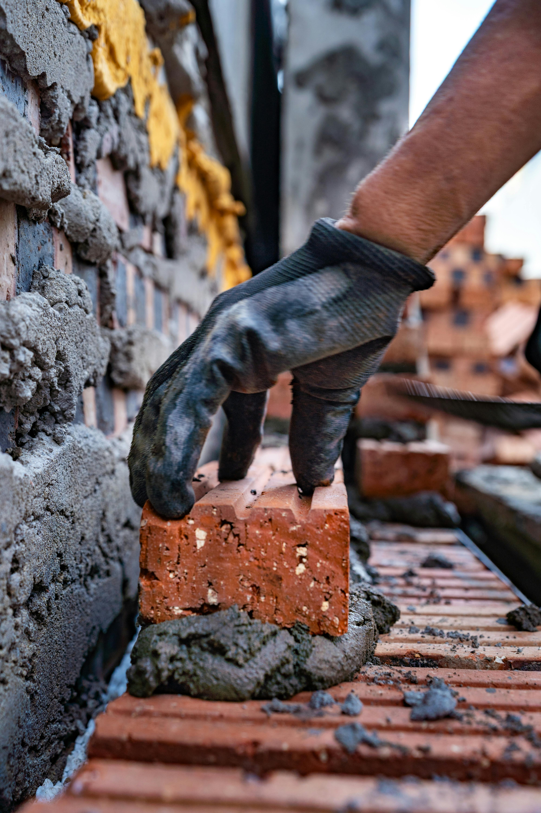

Site internet pour plombier à Saint-Nazaire
En Loire-Atlantique, un plombier qui n'a pas de site web perd des clients chaque jour. Quand un robinet fuit à 21h, le premier réflexe c'est Google. Si vous n'êtes pas là, c'est votre concurrent qui décroche le téléphone.
- Votre numéro en grand sur mobile — les urgences appellent
- Vos interventions listées clairement : dépannage, remplacement, installation
- Zone d'intervention visible (Saint-Nazaire, Montoir, Trignac…)
- Formulaire de devis rapide

Site internet pour électricien à Saint-Nazaire
Les particuliers et entreprises de Saint-Nazaire cherchent un électricien qualifié RGE sur Google, pas dans les Pages Jaunes. Un site pro renforce la confiance et vous permet de montrer vos certifications.
- Mise en avant de vos certifications (RGE, Qualifelec…)
- Page dédiée à vos services : tableau électrique, mise aux normes, domotique
- Formulaire de devis pour les travaux importants
- Référencement local sur les communes du 44

Site internet pour peintre à Saint-Nazaire
En peinture, les photos parlent plus que les mots. Un site avec votre book de réalisations convainc immédiatement les clients hésitants. Montrez vos chantiers, vos finitions, votre soin du travail.
- Galerie photos de vos réalisations
- Description de vos spécialités : intérieur, extérieur, ravalement
- Devis en ligne pour réduire les déplacements inutiles
- Avis clients visibles directement sur votre site

Site internet pour menuisier à Saint-Nazaire
Fenêtres, portes, escaliers, agencement sur mesure — la menuiserie c'est du beau travail. Autant que les clients le voient avant même d'appeler. Un site bien fait valorise votre savoir-faire artisanal.
- Portfolio de vos créations sur mesure
- Pages par spécialité : fenêtres, portes, escaliers, dressing…
- Formulaire de demande de devis détaillé
- Mise en avant du fait main et du local

Site internet pour maçon à Saint-Nazaire
Un chantier de maçonnerie ou d'extension, c'est souvent un gros budget. Les clients cherchent longtemps avant de choisir. Un site professionnel avec vos réalisations et vos références les rassure avant même le premier appel.
- Galerie avant/après de vos chantiers
- Description de vos spécialités : construction, extension, rénovation
- Zone d'intervention dans tout le 44
- Formulaire de prise de contact pour grands projets
Site internet pour paysagiste à Saint-Nazaire
Un jardin réussi, ça se voit. Publiez vos plus beaux aménagements, vos créations d'espaces verts, vos tailles et entretiens. Les particuliers du bord de Loire cherchent un paysagiste de confiance sur Google.
- Galerie de créations et aménagements paysagers
- Services listés : création, entretien, arrosage automatique
- Calendrier de devis en ligne (par saison)
- SEO sur les communes côtières du 44

Site internet pour couvreur à Saint-Nazaire
Après une tempête ou une infiltration, les gens cherchent un couvreur en urgence. Si votre site est bien référencé, c'est vous qu'ils appellent. La couverture, ça ne pardonne pas l'improvisation — votre site non plus.
- Numéro d'urgence visible immédiatement
- Photos de vos réparations et toitures neuves
- Types de toiture pris en charge : ardoise, tuile, zinc…
- Intervention rapide mise en avant

Site internet pour chauffagiste à Saint-Nazaire
Chaudière en panne en plein hiver, installation de pompe à chaleur, entretien annuel — les clients cherchent un chauffagiste RGE qualifié rapidement. Votre site est votre meilleure carte de visite.
- Certifications RGE mises en avant (aides de l'État)
- Services détaillés : chaudière, PAC, climatisation, entretien
- Formulaire d'urgence disponible 24h/24
- Explication des aides MaPrimeRénov pour vos clients